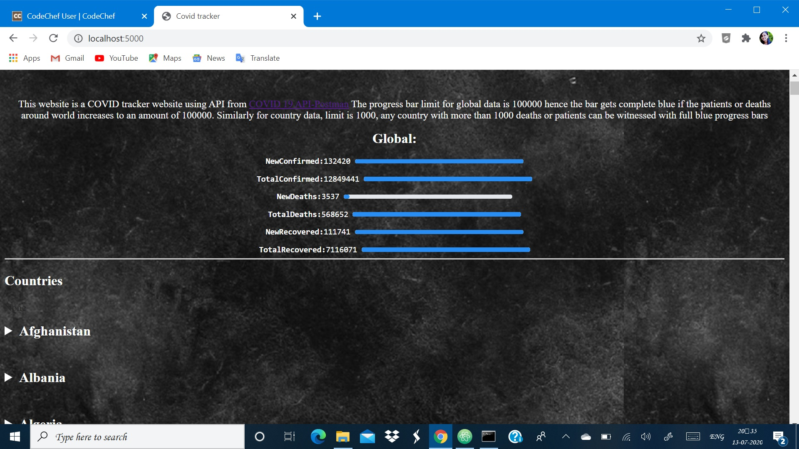
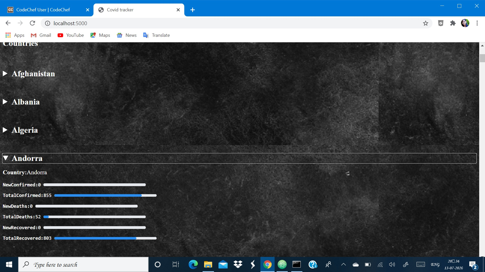
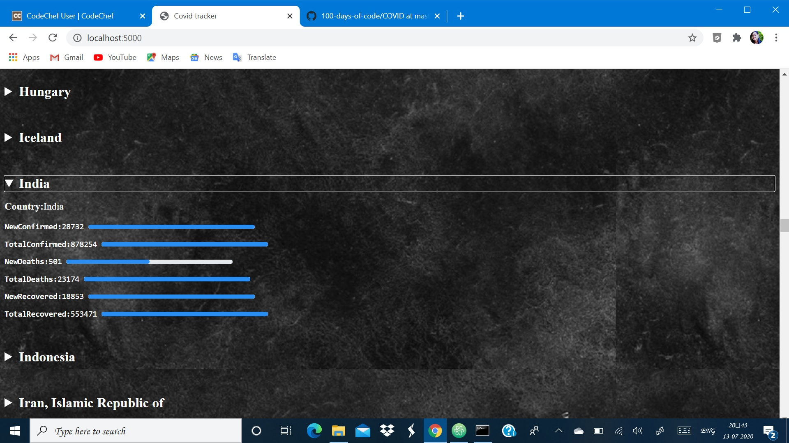

Covid 19 is that pandemic which lead to global deaths and global sickness in larger amounts. It is the one that is responsible for global lockdown and is now the main news in the world. Being a bio student i could'nt go for becoming a doctor and serve covid patients or may be try find a vaccine, but i can offourse build something for it that comes under tech. Hence i built a covid 19 tracker web app that interacts with covid 19 API and gets data from postman. I have built it on flask framework using simple HTML,CSS,python and jinja2. Its not on RWD, as for this sake i am building a covid 19 tracker react application that suits all screens. Its a front end application interacting with covid 19 data api. It provides various charts for visualizing covid 19 data. I reffered a you tube tutorial for this and is a ongoing mini-project. The web app is built on flask and have progress bar limits of 100000 for global data and 1k for country data. Its to get awareness among people about the alarming situation that covid 19 is creating which people who are carelss and neglecting can get to know how dangerous is this new virus.
   View covid 19 web app